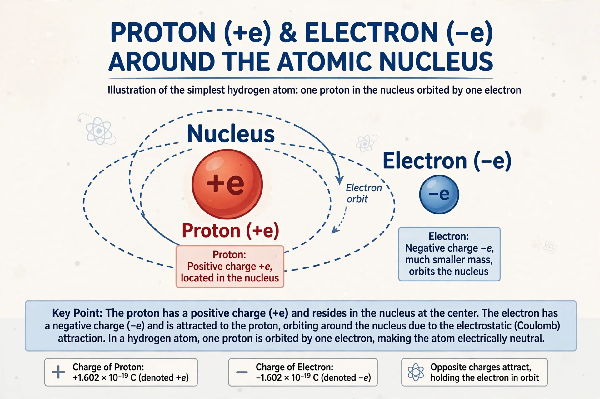

| Elementary charge | |
|---|---|
| Symbol | e |
| Value | 1.602176634 × 10−19 C (exact, SI) |
| Carriers | Electron (−e), proton (+e) |
| First measured | Oil drop experiment (Millikan & Fletcher, 1909–1913) |
The elementary charge, usually denoted e, is the electric charge carried by a single proton, or equivalently the magnitude of the negative charge of a single electron, which has charge −e. It is a fundamental physical constant with the exact value 1.602176634 × 10−19 coulombs in the modern SI system.
Experiments show that the charge of any isolated system is always an integer multiple of e. This quantization was demonstrated decisively by Robert Millikan and Harvey Fletcher's oil drop experiment: every measured droplet charge was a whole-number multiple of the same smallest unit. Quarks, the constituents of protons and neutrons, carry fractional charges of ±1/3e and ±2/3e, but they are never observed in isolation because of color confinement, so free particles still carry integer multiples of e.
The term "electron" for the unit of charge was proposed by George Johnstone Stoney in 1891, and J. J. Thomson measured the charge-to-mass ratio of cathode rays in 1897. Millikan's precise value of e, combined with Thomson's ratio, gave the mass of the electron. Since the 2019 redefinition of the SI base units, the coulomb is defined by fixing the numerical value of e, making the elementary charge an exact defining constant of the measurement system.
The elementary charge appears throughout physics: the Faraday constant (the charge of one mole of electrons) is e times the Avogadro constant, and the fine-structure constant α relates e to the strength of the electromagnetic interaction.
See also: Electric charge, Electron, Coulomb